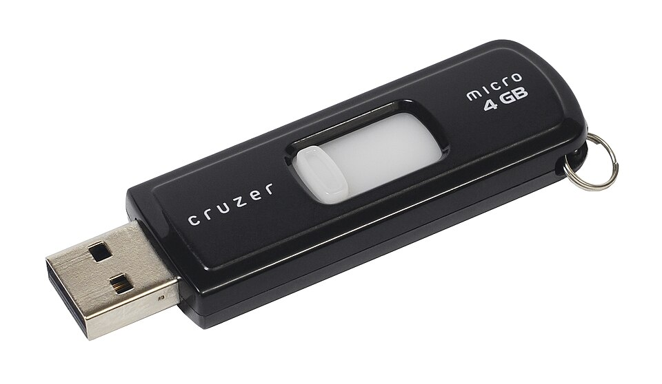

USB drives and memory cards for carrying data in your pocket
Flash memory is a non-volatile type of memory: it retains information even when the power is turned off. It was invented in 1984 at Toshiba laboratories and owes its name to the speed with which an entire block of memory could be erased at once.
Inside the chip there are millions of cells, each storing one or more bits depending on its electrical charge. Since there are no moving parts, flash memory is resistant to shocks and consumes very little power. It is the same technology used in SSDs, just packaged in a different form.
This is why a USB flash drive and an SSD are very similar internally.

A USB flash drive is flash memory enclosed in a casing with a USB connector. Inside it contains the memory chip and a controller that allows the computer to recognize it as another storage device without requiring any additional software.
It replaced the floppy disk within a few years because it could store hundreds of times more data, was faster, and required no dedicated drive. USB flash drives are available in USB 2.0, USB 3.0, and newer versions, with the main difference being their transfer speed.
The SD card was introduced in 1999 for digital cameras and music players. It is a flat card with metal contacts that is inserted into a dedicated slot.
The microSD card is about the size of a fingernail and is commonly used in mobile phones. Depending on their capacity, they are classified as SD, SDHC, or SDXC, and have a printed rating indicating their minimum write speed, an important factor when recording video.
In all cases, the goal is the same: moving data without depending on a network connection.
Today's USB flash drives range from 16 GB in entry-level models to 1 TB in high-capacity versions. microSD cards are also available with capacities of up to 1 TB, although capacities between 32 GB and 256 GB are the most common.
Their main weakness is write endurance: each memory cell can only withstand a limited number of write cycles. They are ideal for transporting data, but not for leaving a backup untouched for many years.
You buy a 16 GB USB flash drive, connect it to your computer, and it reports only 14.9 GB. Nothing is missing. Manufacturers calculate capacity using base 10, where one gigabyte equals one billion bytes, while operating systems use base 2, where a gigabyte requires 1,073,741,824 bytes. It is the same storage space measured in two different ways.
Additionally, part of the space is occupied by the file system itself. On a small flash drive the difference is barely noticeable, but on a 1 TB drive the difference can approach 70 GB.